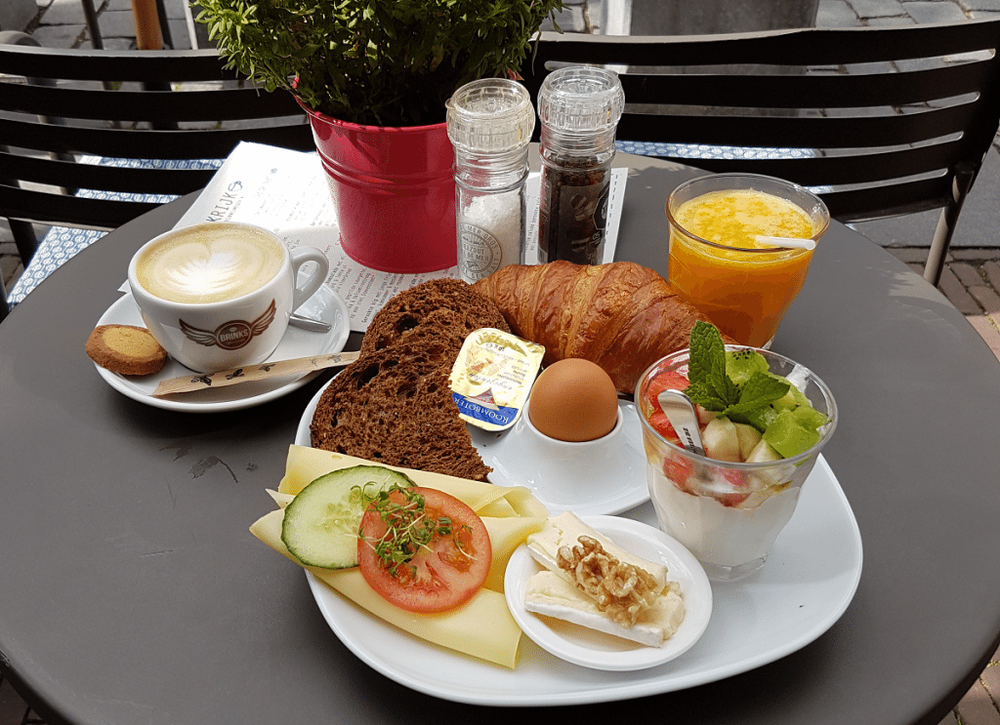
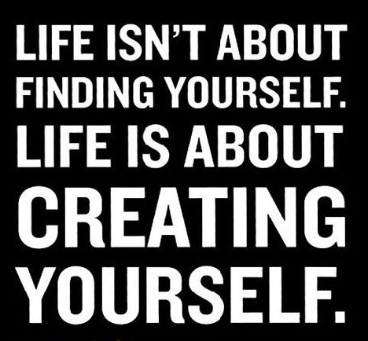
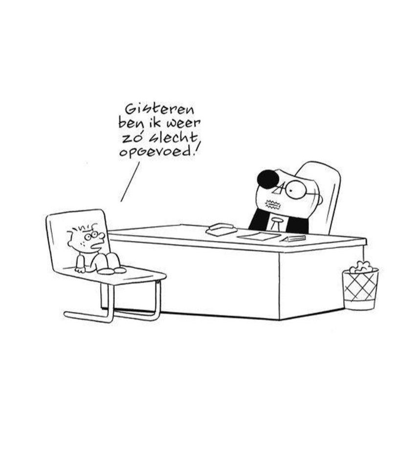

"hey ik heet Fatima 29 jaar oud, ben een moeder van een kind van 2,5 jaar en woon in het mooie BRUSSEL" “Nou, ik ben momenteel een student. Ben een persoon die erg veel van design houd het lijkt mij een leuke uitdaging voor mijn persoonlijke carrière.” 5 jaar ervaring in het werk, "Nu een student voor opleiding Webdesigner, na deze opleing zou ik graag verder gaan studeren voor grafische ontwerp voor meer ervaring op te bouwen"
Shoppen doe ik het graagst favorite winkels zoals, ZARA, H&M, hier vind je leuke links om direct te kunnen shoppen, Link zara link H&M


